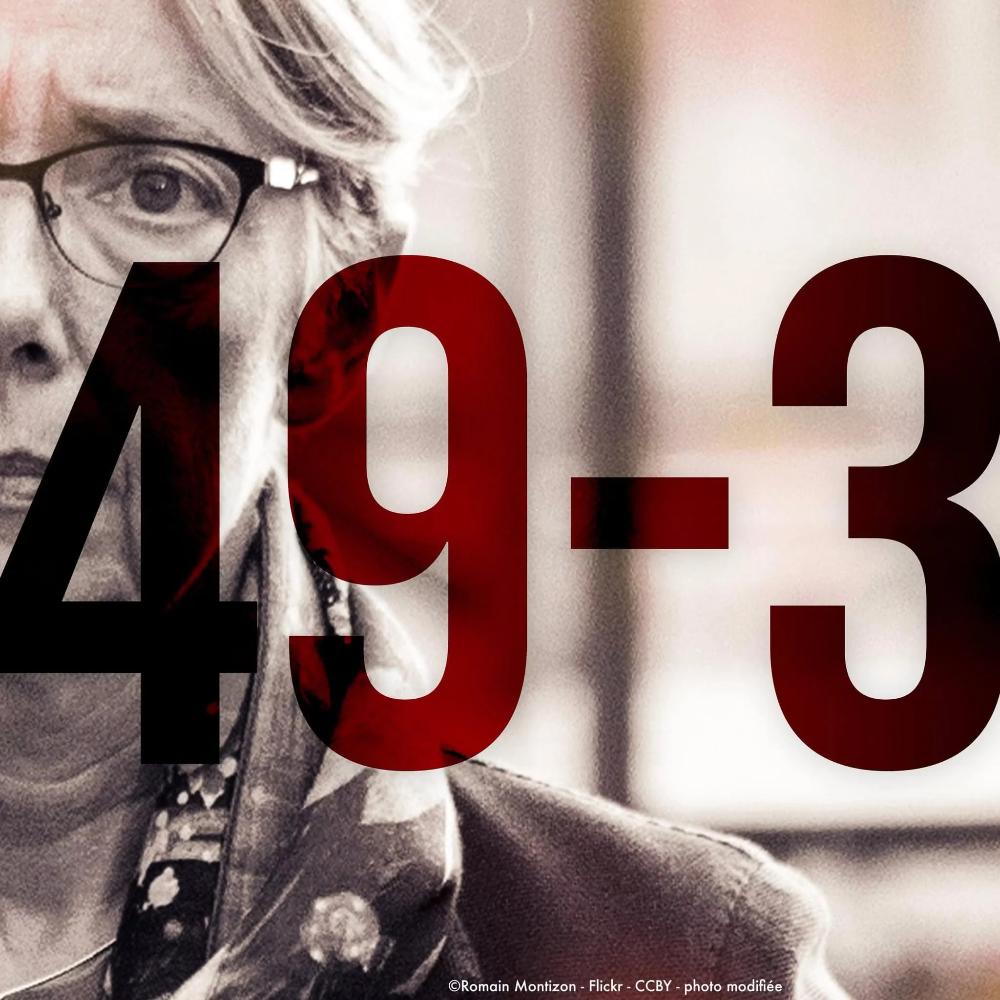

Publication relayée par le PCF 79
Budget de la Sécurité sociale. Les députés communistes réagissent au recours au 49-3
Date de mise à jour indiquée par Facebook · 1 décembre 2023
Texte de la publication · Les députés communistes
Lecture définitive du budget de la sécurité sociale pour 2024 : moins de 2 min d'examen en séance. Voici le temps qu'E. Borne estime suffisant pour parler de l'accès aux soins des Français, des hôpitaux et de leurs personnels... avant de dégainer le vingtième 49-3.

Sources
Les députés communistes · publication relayée par le PCF 79 · bibliothèque Facebook · AR-0002-FB-01533
À lire aussi · Pour la régularisation des praticiens diplômés hors de l’Union européenne · Le lien d’origine